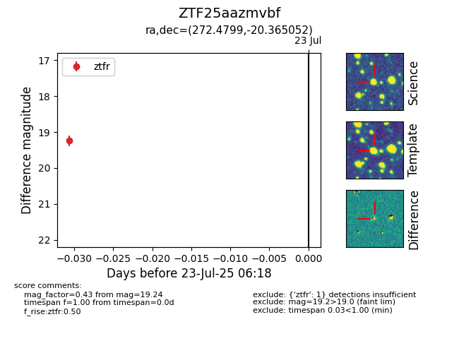

Target ZTF25aazmvbf at 2025-07-23 12:37, see:
FINK: fink-portal.org/ZTF25aazmvbf
Lasair: lasair-ztf.lsst.ac.uk/objects/ZTF25aazmvbf
ALeRCE: alerce.online/object/ZTF25aazmvbf
alt names
ZTF25aazmvbf (ztf,fink)
coordinates:
equatorial (ra, dec) = (272.4799,-20.36505)
galactic (l, b) = (10.1796,-0.47881)
photometry
last ztfr=19.24
1 ztfr detections
